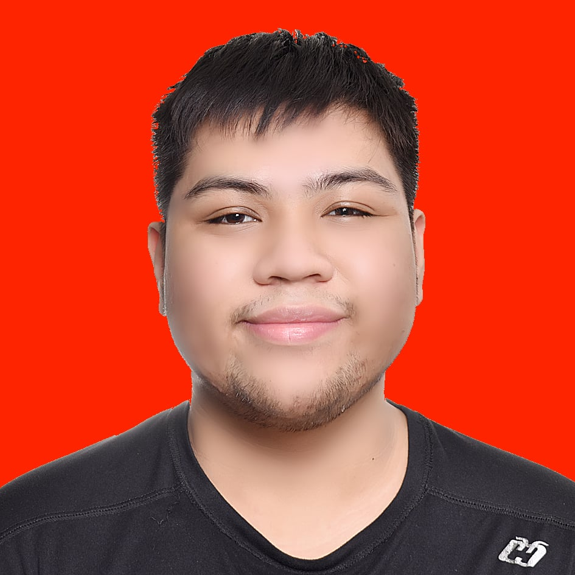
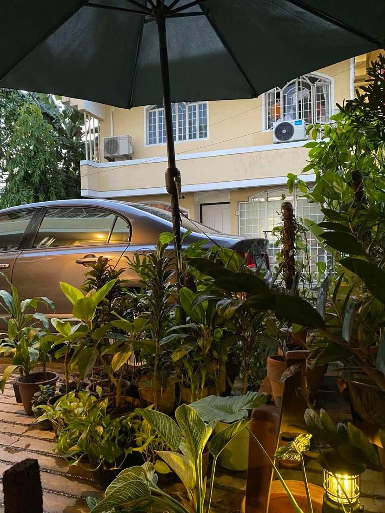
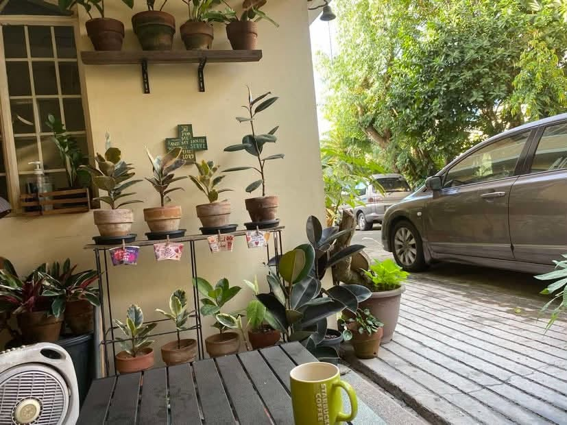
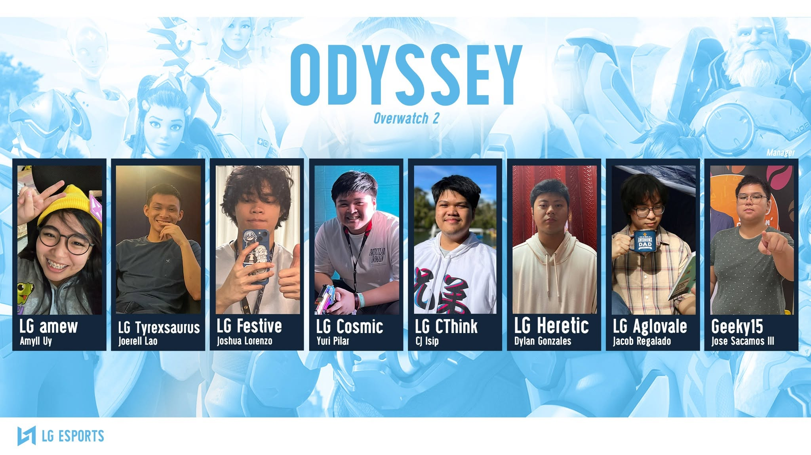
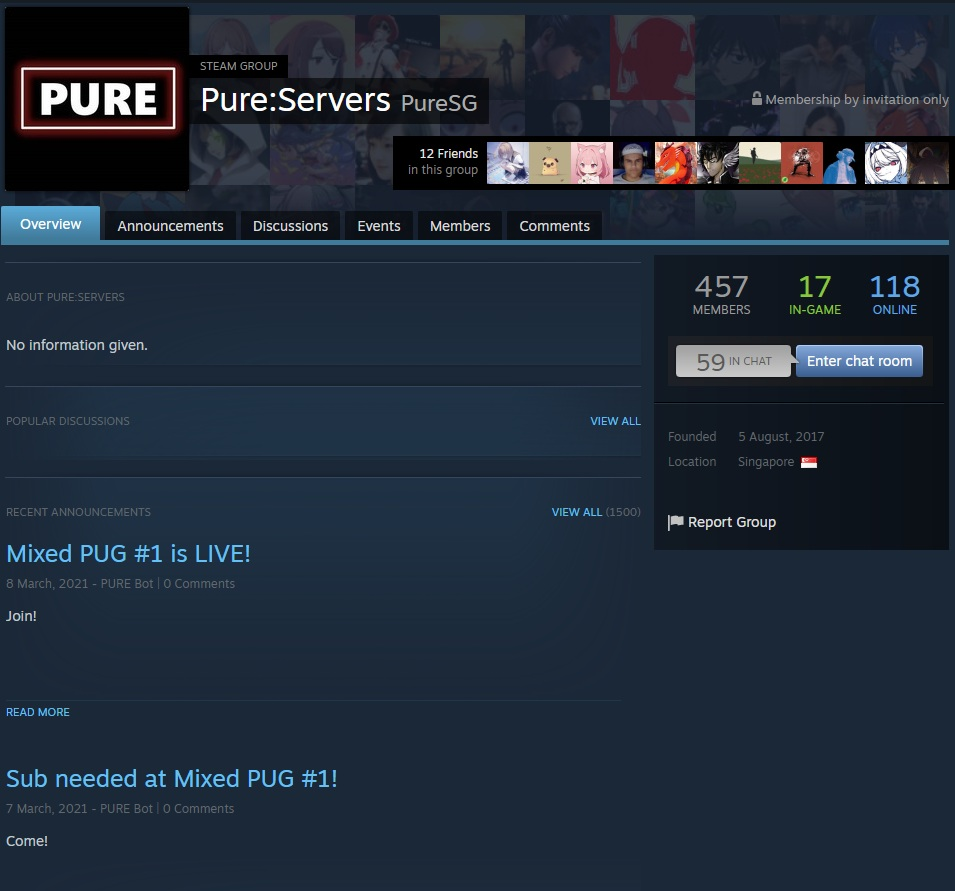
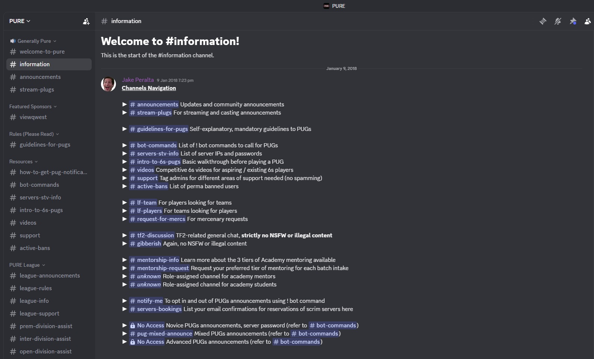

ABOUT ME
Hello! I'm Nicolo Alfredo R. Castro III, but you can call me Nicolo. I'm a 24-year-old, 2nd-year BAMS student currently living in Quezon City. I previously studied BS Management Economics at UP Baguio, but some life events eventually led me here.
There are times when I look back and think about the various what-ifs of my life, but I've found that it's better to accept what can't be changed and to keep moving forward. As Spike says in Cowboy Bebop, "Whatever happens, happens."

THINGS I LOVE
-
Video Games🎮 My go-to stress relief for stepping away from my real-world worries.
-
Boxing🥊 A newer hobby of mine that keeps me active while being incredibly engaging.
-
Chewing Gum🫧 Helps me stay calm and focused, plus there's a lot of flavors to choose from.
-
Cats😺 & Bears🐻 They're simply cute and fluffy!
-
My Family & Friends💜 My biggest support system when life gets rough.
PASSION PROJECTS
1. Learning How to Grow Plants🪴
To give our house a bit more life and color, my parents and I aimed to learn how to grow and care for various plants. It was a long journey filled with trial and error, but it also taught me a lot about the responsibility of looking after another living thing.
Date: 2024-05-16


2. Coaching for LG Odyssey in Overwatch 2📋
Overwatch 2 was a game I spent a good amount of time on, and I was lucky enough to be given the opportunity to help coach Ateneo's Loyola Games Overwatch 2 team for their upcoming tournaments. What started out as something for fun quickly became something more serious, and it became a good opportunity for me to learn how to manage both the individual members and the team as a whole.
Date: 2023-12-05

3. Setting up PURE servers in TF2🖥️
Back when I was active in the competitive side of TF2, a few teammates and I decided to start up our own community servers called "PURE", which later got its own community-run competitive league called "PURE League". While I didn't understand it at the time since I was on the younger side, helping manage "PURE" taught me a lot about accountability and the responsibility of managing something bigger than myself.
Date: 2018-04-05

